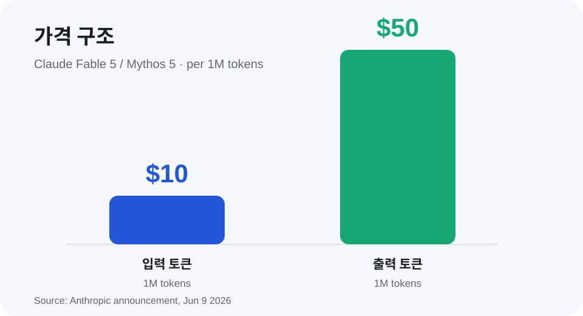

Claude Fable 5 and Claude Mythos 5
이 글은 Anthropic 공식 발표 “Claude Fable 5 and Claude Mythos 5” 원문을 한글로 해석해서 작성한 글입니다. 원문 전체는 Anthropic 공식 사이트에서 확인할 수 있습니다.
Original Source
Anthropic 공식 발표

원문에서 발표한 내용
Anthropic은 2026년 6월 9일 Claude Fable 5와 Claude Mythos 5를 발표했습니다. Fable 5는 일반 사용을 위해 안전장치를 적용한 Mythos급 모델이고, Mythos 5는 같은 기반 모델에서 일부 영역의 안전장치를 해제해 제한된 신뢰 접근 프로그램으로 제공되는 모델입니다.
Anthropic은 Fable 5가 소프트웨어 엔지니어링, 지식 업무, 비전, 과학 연구 등 여러 영역에서 자사의 이전 공개 모델보다 높은 성능을 보인다고 설명합니다. 긴 작업과 복잡한 작업일수록 이전 모델과의 차이가 더 커진다고 밝히고 있습니다.
이 발표를 그냥 신모델 출시로만 보면 부족합니다
이번 발표는 “새 Claude가 나왔다”로만 정리하기에는 조금 더 복잡합니다. Anthropic은 강력한 모델을 완전히 닫아두지도 않고, 그렇다고 아무 제한 없이 모두에게 열지도 않는 중간 방식을 택했습니다. 일반 사용자에게는 Fable 5를 공개하고, 더 민감한 능력을 가진 Mythos 5는 제한 접근 프로그램으로 분리했습니다. 이는 앞으로 강력한 AI 모델이 공개될 때 반복될 수 있는 중요한 패턴입니다.
특히 Mythos 5가 사이버보안 영역에서 강력하다는 점이 발표 전후 보도에서 계속 강조됐습니다. Wired는 Mythos 5가 사이버 파트너와 일부 연구자에게 제공되는 이유를 보안 위험과 연결해 설명했습니다. The Verge는 Fable 5가 Anthropic이 공개한 첫 Mythos급 모델이라는 점에 주목했습니다. Business Insider는 기업 고객, 가격, 구독 플랜, 시장 반응까지 함께 묶어 다뤘습니다. 즉 이 발표는 모델 성능, 보안 위험, 상업적 배포 전략이 한꺼번에 들어 있는 사건입니다.
Fable 5와 Mythos 5의 차이
- Fable 5는 일반 사용자에게 제공되는 모델입니다.
- Mythos 5는 Fable 5와 같은 기반 모델이지만, 일부 안전장치가 해제된 제한 접근 모델입니다.
- Fable 5는 민감한 일부 요청에서 Claude Opus 4.8로 fallback되도록 설계되었습니다.
- Mythos 5는 Project Glasswing과 신뢰 접근 프로그램을 통해 일부 사이버 방어자와 연구자에게 제공됩니다.
| 구분 | 원문 기준 설명 |
|---|---|
| Fable 5 | 일반 사용을 위해 안전장치를 적용한 공개 모델 |
| Mythos 5 | 일부 안전장치가 해제된 제한 접근 모델 |
| Fallback | 민감한 일부 요청은 Claude Opus 4.8이 응답 |
원문에 나온 주요 수치
- Fable 5와 Mythos 5 가격은 입력 100만 토큰당 10달러, 출력 100만 토큰당 50달러입니다.
- Anthropic은 Fable 5의 fallback이 평균적으로 세션의 5% 미만에서 발생한다고 설명합니다.
- Fable 5가 그대로 동작하는 세션은 95% 이상이라고 설명합니다.
- Fable 5는 2026년 6월 22일까지 Pro, Max, Team, seat-based Enterprise 플랜에 추가 비용 없이 포함됩니다.
- 2026년 6월 23일부터는 사용량 크레딧이 필요하다고 안내했습니다.

원문에서 강조한 안전장치
Anthropic은 Fable 5에 새로운 classifier 기반 안전장치를 적용했다고 설명합니다. 사이버보안, 생물·화학, distillation 관련 일부 요청은 Fable 5가 직접 답하지 않고 Claude Opus 4.8이 응답하도록 처리됩니다.
Anthropic은 이 방식이 단순 거절보다 나은 사용자 경험을 제공하면서도, 민감한 영역의 오용 가능성을 낮추기 위한 설계라고 설명합니다.
왜 Opus 4.8 fallback이 중요한가
Fable 5의 안전장치에서 가장 흥미로운 부분은 단순히 “거절한다”가 아니라 “다른 모델로 넘긴다”는 점입니다. 사용자가 Fable 5를 선택했더라도 사이버보안, 생물·화학, 모델 증류처럼 민감한 요청으로 분류되면 Claude Opus 4.8이 대신 응답하도록 설계되어 있습니다. 이것은 사용자 경험과 안전 사이의 절충입니다. 모든 위험 요청을 차단하면 사용자는 답답함을 느낄 수 있고, 모든 요청을 Fable 5가 처리하면 오용 위험이 커질 수 있습니다. Anthropic은 그 중간에서 “강한 모델을 쓰되, 위험한 요청은 더 보수적인 경로로 보낸다”는 방식을 택한 셈입니다.
The Verge는 Fable 5가 대부분의 세션에서는 그대로 동작하고, fallback은 평균적으로 5% 미만에서 발생한다는 설명을 전했습니다. 이 수치가 사실이라면 일반적인 글쓰기, 코딩, 문서 분석, 지식 업무에서는 사용자가 Fable 5의 성능을 그대로 경험할 가능성이 큽니다. 하지만 보안 연구나 생물학 관련 민감 주제를 다루는 사용자는 다른 모델로 넘어가는 상황을 더 자주 겪을 수 있습니다. 그래서 이번 공개는 “성능 좋은 모델을 쓸 수 있게 됐다”와 동시에 “어떤 요청은 보이지 않는 안전 라우팅을 거친다”는 의미를 가집니다.
관련 보도
공식 발표와 함께 여러 해외 매체도 이번 공개를 다뤘습니다. 아래 보도들은 원문을 이해할 때 참고할 만한 추가 관점입니다.
관련 보도를 같이 보면 Fable 5의 의미가 더 선명해집니다. The Verge는 이번 공개를 Anthropic의 첫 공개 Mythos급 모델 출시로 봅니다. 여기서 중요한 단어는 “공개”입니다. Mythos Preview는 제한된 대상에게만 제공됐지만, Fable 5는 일반 유료 사용자 화면에도 올라오는 모델입니다. Wired는 반대로 “왜 완전히 열지 않았는가”를 더 깊게 봅니다. Mythos 5의 사이버보안 능력이 너무 강하기 때문에, Anthropic이 신뢰 접근 프로그램과 Project Glasswing을 통해 방어자 중심으로 먼저 제공한다는 설명입니다.
Business Insider는 제품과 시장의 언어로 이 사건을 봅니다. Fable 5가 Pro, Max, Team, Enterprise 사용자에게 제공되고, 6월 23일부터 사용량 크레딧이 필요하다는 점은 단순 연구 발표가 아니라 실제 상용 제품 정책입니다. 즉 이 글을 읽을 때는 세 질문을 같이 잡아야 합니다. 첫째, Fable 5는 얼마나 강한가. 둘째, 왜 Mythos 5는 제한되는가. 셋째, Anthropic은 이 능력을 어떤 가격과 구독 구조로 배포하려 하는가.
앞으로 비슷한 글을 쓸 때도 이 형식이 좋습니다. 먼저 공식 발표의 대표 이미지나 도표를 보여주고, 그 이미지가 무엇을 강조하는지 설명합니다. 그다음 관련 보도를 붙여 “공식 발표가 말한 것”과 “외부 매체가 주목한 것”을 나눕니다. 이렇게 하면 단순 번역글보다 훨씬 읽을 이유가 생깁니다.
| 매체 | 주로 다룬 관점 |
|---|---|
| The Verge | Fable 5가 Anthropic의 첫 공개 Mythos급 모델이라는 점과 공개 범위를 설명했습니다. |
| Wired | Mythos 5 접근 제한, 사이버보안 능력, 안전장치의 의미를 중심으로 다뤘습니다. |
| Business Insider | 출시 대상, 가격, 기업 활용 사례와 시장 반응을 함께 정리했습니다. |
원문 확인
이 페이지는 원문 전체를 옮긴 글이 아닙니다. 전체 발표와 세부 벤치마크, 안전장치 설명은 아래 공식 링크에서 확인할 수 있습니다.